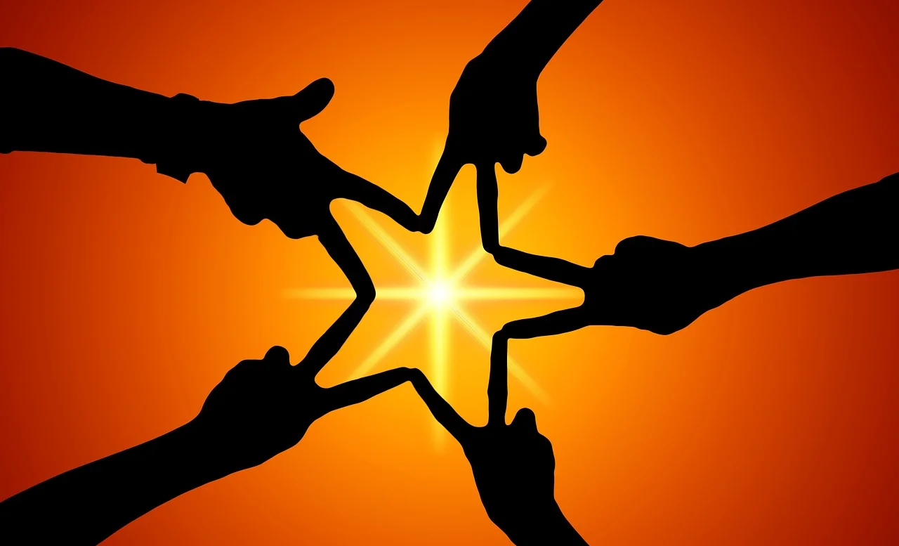

“Viraia” es un concepto inspirado en el término “viraha” que, en idioma hindi, significa “el descubrimiento del amor a través de la separación”.
A lo largo de nuestras vidas atravesamos múltiples separaciones: de un ser querido, de un objeto o lugar, de una etapa o un camino vital, de una identidad, de una relación con otra persona o con nosotros mismos y nosotras mismas… A veces lo vivimos casi sin ser conscientes de ello y otras nos sacuden huracanes de emociones, pensamientos y muchas otras dificultades que nos desequilibran.
Todo pasa y todo deja su huella, la percibamos o no.
Y, si tomamos consciencia, perspectiva y reeducamos nuestra forma de cuidarnos y de vivir todos estos procesos, con la naturalidad y amabilidad que necesitan, entonces se abre una nueva posibilidad de autocuidado y, en definitiva, de descubrir un nuevo amor hacia lo que vivenciamos y hacia nuestro propio ser.
Viraia viene a traer luz a las sombras.
El camino está abierto.